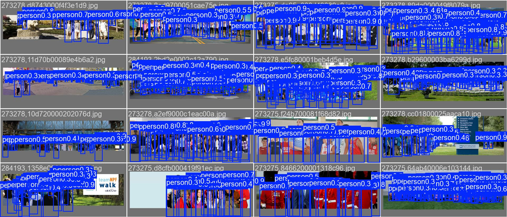
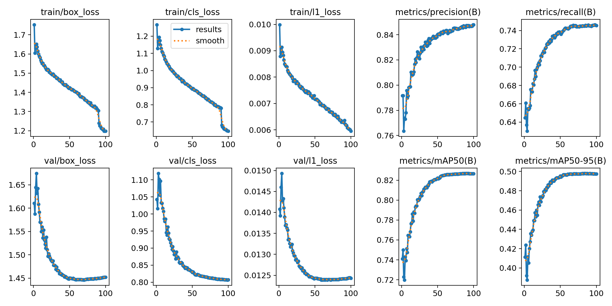
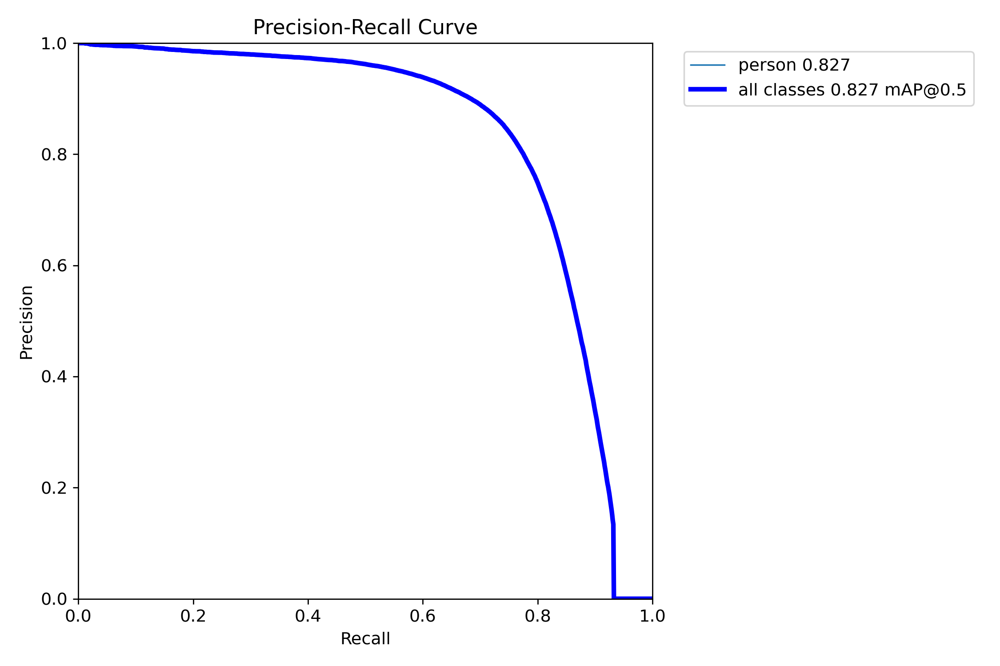
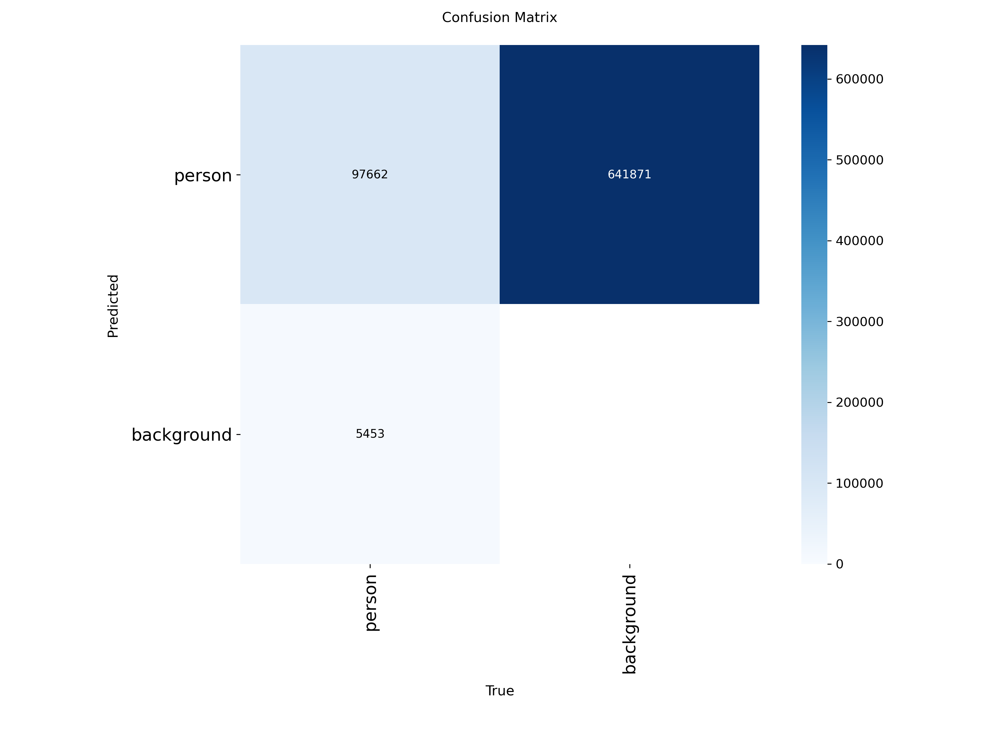

Evaluasi empat arsitektur YOLO
untuk sistem penghitung orang
untuk sistem penghitung orang
Skenario A — Evaluasi Detektor
Hibah Penelitian Unggulan UNSIL 2026
Hibah Penelitian Unggulan UNSIL 2026
Kami menguji apakah detektor tanpa NMS benar-benar lebih baik untuk menghitung orang
NMS adalah tahap pembersih setelah deteksi, yang membuang kotak yang bertumpuk.
Di kerumunan, tahap ini bisa ikut membuang orang yang memang berdiri berdempetan.
Empat model dilatih dengan pengaturan yang persis sama
| Pengaturan | Nilai |
|---|---|
| Data latih | CrowdHuman, 15.000 gambar |
| Data uji | 4.370 gambar, 99.481 orang |
| Lama pelatihan | 100 epoch |
| Resolusi | 640 × 640 |
| Seed acak | 0 — sama untuk keempatnya |
Ketiga model kelas nano setara, selisihnya di bawah batas yang bisa dibedakan
| Model | Recall | mAP@0,5:0,95 |
|---|---|---|
| yolo26s | 0,746 | 0,497 |
| yolov10n | 0,689 | 0,452 |
| yolo26n | 0,689 | 0,450 |
| yolov11n | 0,697 | 0,446 |
Rentang ketiga model nano hanya 0,006, tak bisa dibedakan dari kebetulan.
Ukuran model delapan kali lebih menentukan daripada pilihan arsitektur
8×
Naik dari kelas nano ke small menambah 0,048 mAP.
Seluruh selisih antar arsitektur di kelas yang sama hanya 0,006.
Detektor tanpa NMS memangkas tahap pembersih 2,9 kali
| Model | Pakai NMS | Tahap pembersih (ms) | Bagian dari waktu |
|---|---|---|---|
| yolov11n | ya | 0,49 | 18,7% |
| yolov10n | tidak | 0,17 | 7,3% |
| yolo26n | tidak | 0,16 | 6,0% |
| yolo26s | tidak | 0,17 | 6,0% |
Biayanya juga tetap datar walau kerumunan makin padat.
Sistem sanggup berjalan di CPU biasa, tanpa GPU sama sekali
| Model | FPS di CPU | Waktu per frame |
|---|---|---|
| yolo26n | 97 | 10,3 ms |
| yolov10n | 82 | 12,1 ms |
| yolov11n | 71 | 14,1 ms |
| yolo26s | 43 | 23,2 ms |
Batas kelayakan video adalah 30 FPS. Keempatnya lolos setelah diekspor ke ONNX.
Orang di tepi bingkai dua kali lebih sulit dideteksi daripada yang tertutup sesama
15 dari 100 orang di data uji berada di tepi bingkai.
Sekitar satu dari sepuluh orang tak pernah terdeteksi, apa pun ambangnya
7–10%
Artinya dari setiap 100 orang sungguhan, 7 sampai 10 orang lewat dari deteksi.
Batas ini sudah terkunci di detektor, tracker dan logika hitung di belakangnya tak bisa memperbaikinya.
Karena itu garis hitung sebaiknya dijauhkan dari tepi bingkai
Perbaikan ini gratis, tak perlu model yang lebih besar.
Kesimpulan: arsitektur bukan penentu, ukuran dan CPU adalah kunci
Tiga arsitektur nano setara. Detektor tanpa NMS menang di tahap pembersih, bukan di akurasi.
Untuk CPU kampus, YOLO26n paling masuk akal: 97 FPS, ruang leluasa untuk tracker dan penghitungan.
Untuk GPU, YOLO26s memberi akurasi tertinggi.
YOLO26 terbukti untuk CPU kampus, bukan klaim kosong
| Klaim YOLO26 | Status | Hasil kami |
|---|---|---|
| Tanpa NMS | Terbukti | Pembersih 2,9× lebih cepat |
| 43% lebih cepat di CPU | Diuji | Arah benar, kami ukur 24% |
| Objek kecil lebih baik | Belum | Selisih terlalu kecil, di dalam derau |
Pilihan YOLO26 sebagai prototipe tertopang bukti untuk edge, bukan untuk GPU.
Tiga hal yang belum bisa kami simpulkan
- Setiap model baru dilatih sekali, jadi selisih kecil belum bisa diklaim.
- Belum diuji pada rekaman CCTV kampus, baru pada data publik.
- CrowdHuman berupa foto diam, jadi belum menyentuh akurasi hitungan.
Lapisan detektor sudah selesai, yang menentukan berikutnya adalah tracker
Detektor bukan penentu utama akurasi hitungan, ketiga arsitektur setara.
Yang belum diuji sama sekali adalah lapisan pelacakan identitas,
dan di situlah sumber hitung ganda berada.
Cadangan: hasil deteksi pada data uji

Cadangan: contoh deteksi kualitatif

Cadangan: kurva latihan menyatakan 60 epoch sudah cukup

Cadangan: menurunkan resolusi merugikan di GPU
| Resolusi | FPS | Deteksi per gambar |
|---|---|---|
| 640 | 287 | 153 |
| 512 | 317 | 106 |
| 416 | 344 | 88 |
| 320 | 362 | 50 |
| 256 | 365 | 33 |
Kecepatan naik 27%, tetapi 78% deteksi hilang.
Cadangan: kurva precision-recall model terbaik

Cadangan: matriks sesat menunjukkan siapa yang terlewat
